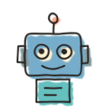

Welcome back
Day 5 of 8 · Tuesday 13 October

Check in
“What was an ‘aha’ moment for you this week?”

Today
Today
Your assembly lines
“What did you change in your assembly line, and what happened?”

rooms of 2 or 3 · 9 min · a sticky in each Miro column · then a few of us share
Today
A machine, up close: the plan checker
AGENTS.md · guide
The task, the four criteria, and how to find the plan
↓
Defect tracker
GitHub Issues
Screenshot API
read: “show me this page”
→

Plan checker
How much of the plan is built?
Rigor · fidelity · quality · releasability
→
Results endpoint
POST its analysis
its only write
The plan checker, as a card
Job
Say how much of the plan is built: rigor, fidelity, quality, releasability
Allowed
Read the plan and the code · the defect tracker · ask for screenshots · POST results
Not allowed
Change the code, the plan, or anything else
Result
Its analysis, POSTed to one endpoint
Context given
AGENTS.md: the task, the criteria, how to find the plan
Left out
The doer's conversation: it judges the work, not the story
Sensors
It is one: a model's judgement on the doer's work
The card you'll fill in next, for a machine of your own
Design your machines
“In your group, define a harness and context for at least one machine per person, for your capstone's assembly line.”
3 rooms · 15 min · one Miro card each · then each group shows one machine
Today
How far can we push assembly lines?
“What would you want an assembly line to do that yours can't yet?”

A machine, a check, or the route?
Today
Preview: fan out
doer
→fans out
→fans in
synthesiser
reads all three, decides
satisfied → planner · not satisfied → doer
The three big brains: one review, three providers' models, at the same time
 Before Thursday
Before Thursday
- Do iteration 005 of the tutorial: fan out
- Run at least one more iteration of your capstone through the factory
Retro and takeaways
“One thing you're taking away.”

See you Thursday!